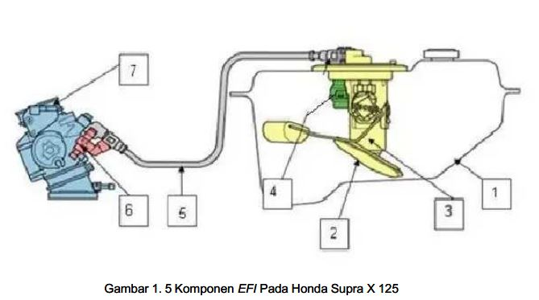
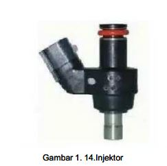

Tujuan Pembelajaran
- Menjelaskan fungsi dan bagian sistem pengaliran bahan bakar.
- Menjelaskan aliran bahan bakar dari tangki sampai injektor.
- Menjelaskan fungsi fuel pump, pressure regulator, injector, dan throttle body.
- Mengenali dasar pemeriksaan dan perawatan sistem bahan bakar.
Cara Menggunakan Media
Pilih menu. Klik kartu komponen untuk melihat fungsi. Gunakan simulasi untuk melihat urutan kerja. Gambar dapat diklik untuk diperbesar.
Konsep Utama
Sistem pengaliran bahan bakar dilakukan dengan tekanan tinggi untuk mentransfer bahan bakar mulai dari tangki sampai dengan injektor.
Simulasi Alur Sistem
Tekan tombol untuk menjalankan aliran tahap demi tahap.
📘 Rangkaian Aliran Bahan Bakar EFI
Klik gambar untuk memperbesar. Gambar menunjukkan rangkaian komponen EFI Honda Supra X 125 dan arah aliran bahan bakar.


Komponen Sistem
Simulasi Electric Fuel Pump
Pompa bensin berfungsi memompa dan mengalirkan bahan bakar dari tangki ke injektor.


Fuel Pressure Regulator
Fuel pressure regulator berfungsi mengatur tekanan bahan bakar di dalam sistem agar tetap/konstan.

Simulasi Injector
ECU/ECM memberi tegangan ke solenoid coil. Solenoid menjadi magnet, menarik plunger dan mengangkat needle valve sehingga bahan bakar bertekanan keluar.
🎬 Video/Animasi Injeksi — Materi 1 PGM-FI
Gunakan animasi Materi 1 PGM-FI berikut sebagai pengantar sebelum mempelajari Sistem Pengaliran Bahan Bakar pada Materi 2.
Catatan: animasi SWF dijalankan dengan Ruffle. Siswa memerlukan koneksi internet untuk memuat Ruffle dari CDN.🎥 Video Cara Kerja Injektor
Video YouTube berikut digunakan sebagai pengayaan untuk memahami prinsip kerja injektor.



Simulasi Throttle Body
Geser slider untuk mensimulasikan pembukaan throttle valve.
Galeri Gambar Materi 2
Semua gambar dari ZIP Bapak ditampilkan di sini. Klik gambar untuk memperbesar.
Jadwal Perawatan Berkala
| No | Bagian | Tindakan / Interval |
|---|---|---|
| 1 | Saluran bahan bakar | Periksa 4.000 km, 8.000 km, 12.000 km dan seterusnya setiap 4.000 km. |
| 2 | Sistem saluran udara sekunder | Periksa dan bersihkan 12.000 km. Ganti setiap 3 tahun atau 24.000 km. |
| 3 | Putaran stasioner | Periksa, bersihkan, setel 500 km, 2.000 km, 4.000 km dan setiap 2.000 km. |
| 4 | Gas tangan | Periksa dan setel bila perlu 4.000 km, 8.000 km, 12.000 km dan seterusnya setiap 4.000 km. |
| 5 | Saringan udara | Periksa dan bersihkan 2.000 km, 4.000 km dan seterusnya; ganti setiap 12.000 km. |